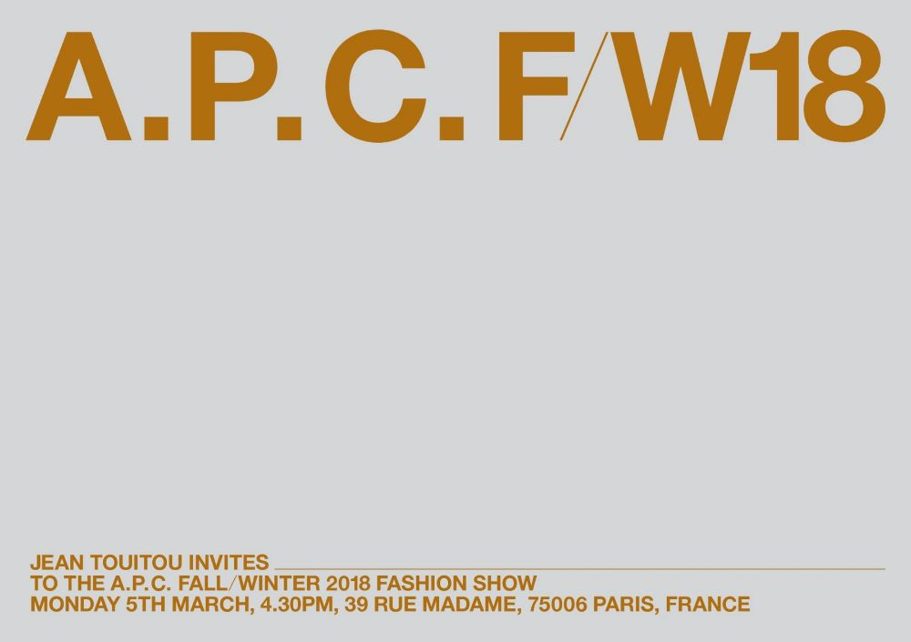
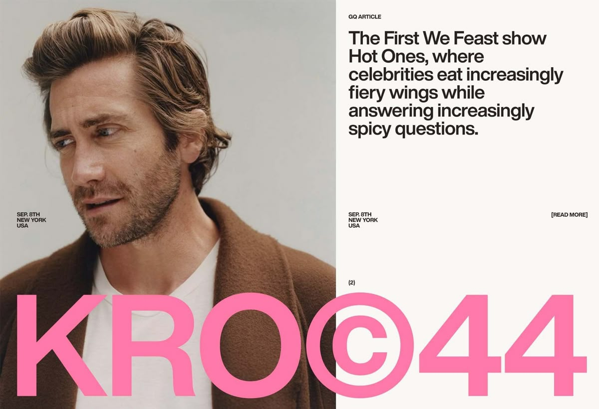
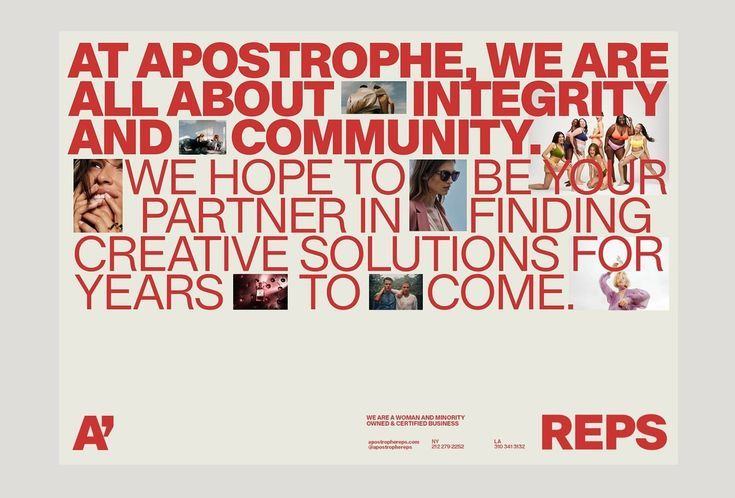
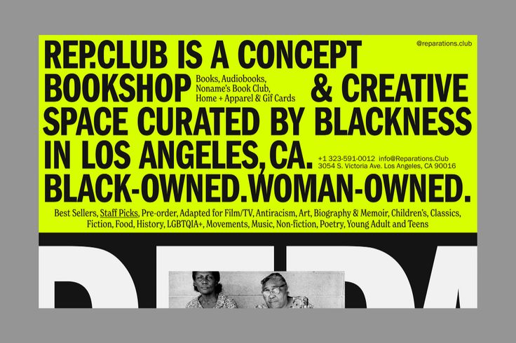
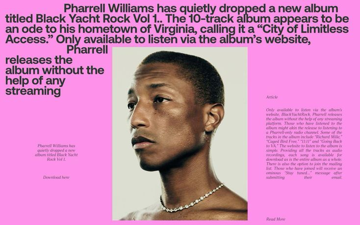
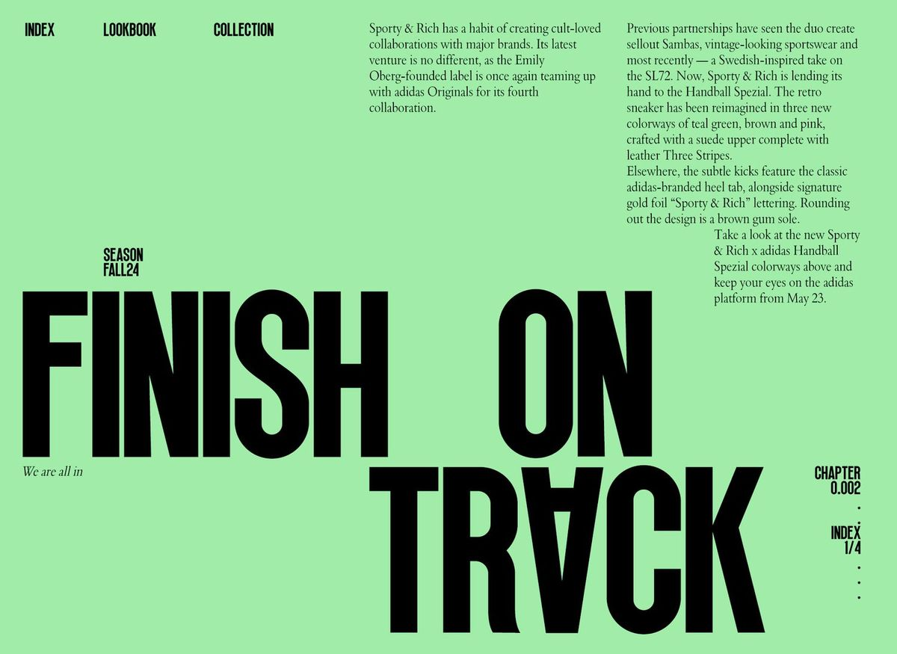

SYSTEMATIC. INTUITIVE. AESTHETIC.
Minjun Han한민준.
Lead Product Designer focusing on Systematic UI and User Experience.
Crafting scalable design systems across global platforms like LINE and Danggeun.
체계적인 UI와 사용자 경험에 집중하는 리드 프로덕트 디자이너.
라인(LINE)과 당근마켓 등 글로벌 모바일 앱의 확장 가능한 디자인 시스템을 구축합니다.
Experience주요 경력.
LINE Corporation라인 (LINE)
Product Designer (Lead)리드 프로덕트 디자이너
Global Messenger UX Redesign / Lead Design System 3.0 / VOOM Creator Studio글로벌 메신저 UX 리디자인 / 디자인 시스템 3.0 리드 / VOOM 크리에이터 스튜디오 디자인
- Reduced message discovery time by 40%메시지 탐색 시간 40% 단축 및 효율화
- Systematized 240+ components with dark mode support240개 UI 컴포넌트 체계화 및 다크모드 전면 지원
Danggeun (Karrot)당근마켓
Product Designer프로덕트 디자이너
Chat Transaction Experience / Seed Design System / Neighborhood Feed Redesign당근 앱 채팅 거래 경험 개선 / '당근 씨앗' 디자인 시스템 초기 구축 / 동네생활 피드 리디자인
- Contributed to 18% improvement in transaction success rate중고 거래 매칭 성공률 18% 향상에 기여
- Built the initial "Danggeun Seed" design system핵심 120개 컴포넌트 및 라이브러리 가이드라인 수립
Samsung Electronics삼성전자 無선사업부
UX Designer (Mobile)모바일 UX 디자이너
Galaxy S8 AOD / S7 Edge Panel / Samsung Pay UX갤럭시 S8 AOD 테마 / S7 엣지 패널 / 삼성페이 카드 등록 UX 개편
- Won iF & Reddot design awards for mobile interfaces독창적인 플래그십 모바일 인터페이스 설계로 iF 및 Reddot 디자인 어워드 수상
Studio Joh스튜디오좋
Junior Designer주니어 디자이너
Hyundai Card Music Library / Amorepacific Packages현대카드 뮤직 라이브러리 공간 그래픽 / 아모레퍼시픽 이니스프리 프리미엄 패키지
Selected Works주요 프로젝트.

LINE Design System 3.0라인 다크모드 대응 시스템
Scalable unified component library for LINE global services supporting comprehensive dark mode.수많은 국가에서 쓰이는 라인의 컴포넌트를 통합 및 체계화하고 다크모드 대응을 완성하여 핸드오프 리소스를 단축했습니다.

Karrot Chat Transaction UX당근마켓 채팅 송금 경험 개선
Seamless negotiation and scheduling interactions to minimize user friction in local transactions.채팅 내 가격 흥정 인터랙션을 부드럽게 개선하여 이웃 간 중고거래의 마찰을 줄이고 전환율을 끌어올렸습니다.

Galaxy S8 Always On Display갤럭시 스마트폰 AOD 혁신 설계
Award-winning power-efficient interface design for Samsung's flagship mobile devices.저전력 환경이라는 제약 속에서 최소한의 픽셀로 심미성을 끌어낸 위젯 배치를 성공적으로 도입했습니다.

Smart Home Dashboard통합 스마트홈 대시보드
A centralized control panel designed for smart home devices with seamless user onboarding.다양한 스마트 디바이스를 한 번에 제어하고 직관적으로 연결할 수 있는 사용자 중심 대시보드를 통일성 있게 설계했습니다.

NeoBank Investment App네오뱅크 간편 투자 앱 UX
Redefined the micro-investment experience for young adults by gamifying the saving process.MZ세대의 자산 관리에 맞춰 복잡한 소액 투자 과정을 게임화(Gamification)하여 사용자들의 진입장벽을 대폭 낮췄습니다.

Data Analytics SaaSB2B 데이터 분석 SaaS
Comprehensive web platform providing deep analytical insights with customizable data visualization.방대한 양의 B2B 데이터를 시각적으로 정리하고, 강력한 커스터마이징 차트를 제공해 실무자들의 업무 효율성을 극대화했습니다.
Capabilities상세 역량.
Tools하드 스킬 도구
Figma, Framer, ProtoPie, Principle, Sketch, Adobe CC, Notion, JIRA, Confluence, HTML/CSS
Awards & Talks어워드 수상 & 외부 강연.
- 2024 Good Design Award — LINE Design System
- 2023 iF Design Award — LINE VOOM
- 2022 Reddot Design Award — LINE Gifting
- Config 2024피그마 Config 2024 — Speaker (Figma Korea)한국 공식 커뮤니티 세션 연사
- FEConf 2022 — Speaker ("When Designers Read Code")발표 세션 ("디자이너가 코드를 읽으면 생기는 일")
Let's build a better system.아름답게 작동하는 시스템을 만듭니다.
Currently open for new collaboration opportunities.새로운 도전과 협업 기회를 기다리고 있습니다.